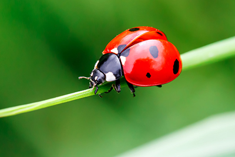

Lieveheerstbeestje

Lieveheersbeestjes hebben een ronde, vaak halfbolvormige vorm met
korte pootjes die net als de kleine antennes onder het dek- en
nekschild kunnen worden teruggetrokken.
Ze hebben vaak rode, gele,
witte, zwarte en oranje kleuren en zijn vaak gestippeld.
In België en Nederland komt een zestigtal soorten voor met een
grootte van 2 tot 10 millimeter.
De kevers en de larven zijn vaak
roofdieren van onder andere bladluizen (die vaak worden beschermd
door mieren vanwege hun zoete afscheiding), maar er zijn ook
lieveheersbeestjes met een plantaardig dieet.
De meeste lieveheersbeestjes leven ongeveer een jaar. Het
aantal stippen zegt dus niets over de leeftijd.
De kleur en de
vlekken op de dekschilden spelen wel een belangrijke rol bij het op
naam brengen van de verschillende soorten.
(Hier komt normaal meer inhoud van de site.)
bla bla bla
bla bla bla